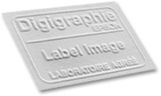

Tirage pigmentaire
Que vous souhaitiez des tirages pour une exposition, une édition limitée, ou un projet personnel, nos impressions pigmentaires garantissent une qualité d'image optimale et une excellente stabilité dans le temps.
Nos tirages sont réalisés sur des imprimantes Epson et des papiers jet d'encre de première qualité, sélectionnés de manière à couvrir une large gamme de teintes, d’épaisseurs, de textures et de brillances.
Le tirage Direct pour les fichiers prêts à imprimer.
LE TIRAGE D’EXPOSITION pour les fichiers qui nécessitent d’être optimisés avant impression. Ils peuvent également être réalisés en collaboration avec notre tireur, sur rendez vous. Nous vous aidons à choisir un support adapté en fonction de votre image parmi une gamme étendue de papiers mats, satiné, brillant, barytés ou encore sur toile canvas à monter sur châssis.
Pour vos projets événementiels, expositions, signalétique, nous pouvons imprimer sur différents types de supports communiquants : bâche, toile, vinyle adhésif, papier peint... largeur maximum d'impression 150 cm.
Imprimer
Vos images
Epson 9890 et 11880 jusqu’à160cm de large
avec 11 encres pigmentaires Ultrachrome HD
EDITION D’ART / SERIE LIMITEE
Une impression numerique prend tout son caractere d'estampe
lorsqu'elle se differencie d'une reproduction mecanique en grande quantite
L’estampe numérique est avant tout une impression
Caractéristiques d'une estampe numérique originale selon l'atelier label image
Elle est créée et imprimée sous le contrôle de l'artiste
Elle est imprimée en série limitée
Chaque épreuve est accompagnée d'un certificat d'authenticité
L’ épreuve est numérotée et signée de la main de l'artiste
Une série limitée avec une impression numérique pourra prendre sa source dans des croquis et peintures réalisés avec des techniques traditionnelles puis numérisés et transformés à l'aide de logiciels et de tablettes graphiques ou d’écrans tactiles.
En matière de photo numérique, les épreuves des tirages ne dépassant pas 30 exemplaires sont considérées comme des "originaux" et se voient appliquer par le fisc un taux de TVA réduit.
DIGIGRAPHIE
Pour ses productions et reproductions d’oeuvres d’art l’atelier a adopté la Digigraphie, label très utilisé par les artistes, les musées, les galeries et les professionnels de l’édition.
Nous sommes agréÉS Digigraphie depuis 2007
Le label Digigraphie certifie la qualité et la pérennité des oeuvres par l'utilisation des meilleures technologies d'impression jet d'encre disponibles aujourd'hui
Impression sur traceurs Epson Stylus Pro
Utilisation de papiers certifés par Epson
Encres pigmentaires Ultrachrome
Contrôle régulier des paramètres d'impression par Epson
Les tirages certifiés Digigraphie sont authentifiés par un poinçon à sec ou par un tampon au dos du tirage si celui-ci est contrecollé. Les papiers certifiés ont tous subi des tests de tenue dans le temps pour vous garantir une très longue durée de conservation.
Tirages argentiques lambda
Le tirage "Lambda" est réalisé d'après un fichier numérique sur de nombreux papiers argentiques : brillant, satiné, métallique ou haute réflexion Fujiflex mais aussi en transparent et sur film Duratrans adapté aux caissons lumineux. Le papier est développé dans un procédé chimique chromogène RA4 puis fixé, lavé et séché. Largeur maximum des tirages lambda 125 cm.
Tirages direct sur supports
Pour vos événements ponctuels, expositions en extérieur, nous pouvons imprimer directement sur de nombreux matériaux : cartons, pvc, moussse, dibond 2 ou 3 mm, aluminium anodisé, plexiglass…
Ces impressions sont réalisées à base d'encres UV. Le format maximum en un lé est de 120x250 cm